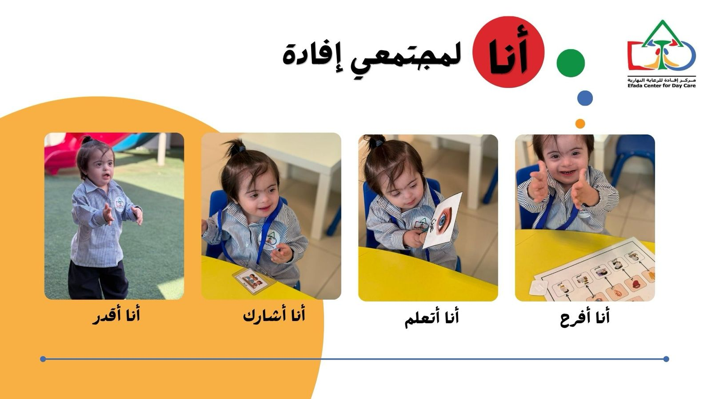

مركز إفادة للرعاية النهارية (متلازمة داون)
انطلقت مبادرة تأسيس مركز إفادة للرعاية النهارية من أخصائية التربية الخاصة {ديمة عبدالله الطويل}، وكان الهدف الرئيسي تأهيل وتدريب الأطفال من ذوي متلازمة داون وأمهاتهم في كيفية رعاية وتعليم ابنها بطريقة صحيحة.
وقد عملت على مجموعات لتدريب الأطفال بشكل خاص منذ عام 2009م، وظل الحصول على ترخيص رسمي هاجساً لهذا الهدف حتى حصلوا عليه عام 2013م بمسمى مركز إفادة للرعاية النهارية تشرف عليه وزارة الموارد البشرية والتنمية الاجتماعية بترخيص رقم (٢٠٤). يضع مركز إفادة نصب عينيه استراتيجية طويلة الأمد تهدف لتحقيق تميز نوعي على مستوى الخدمات والبرامج المقدمة للأطفال وذويهم، وبناء عليه تم العمل على تطوير أساليب ونماذج للعمل تتماشى مع المجتمع اعتمد الفريق في التخطيط والتنفيذ على الأساليب العلمية الحديثة لكافة عناصر الخدمات.
رؤيتنا
الوصول بقدرات الأطفال من ذوي متلازمة داون إلى أعلى مستوى يستطيعون من التعليم الأكاديمي والمهني والوصول إلى منافسات مهنية ورياضية.

الأهداف والرسالة
- توفير خدمات التأهيل والرعاية الصحية للأطفال من ذوي متلازمة داون.
- تطوير وتوفير برامج التأهيل النفسي، التأهيل المهني، والتأهيل الرياضي.
- تطوير وتوفير برامج التدريب والمعلومات والخدمات المساندة لأسر الأطفال.
- تطوير وتوفير برامج التعليم والتأهيل لذوي متلازمة داون.
- تطوير المواد والبرامج التدريبية والعلمية لتأهيل المدربين والمدرسين مهنياً في مجال متلازمة داون والقصور العقلي.